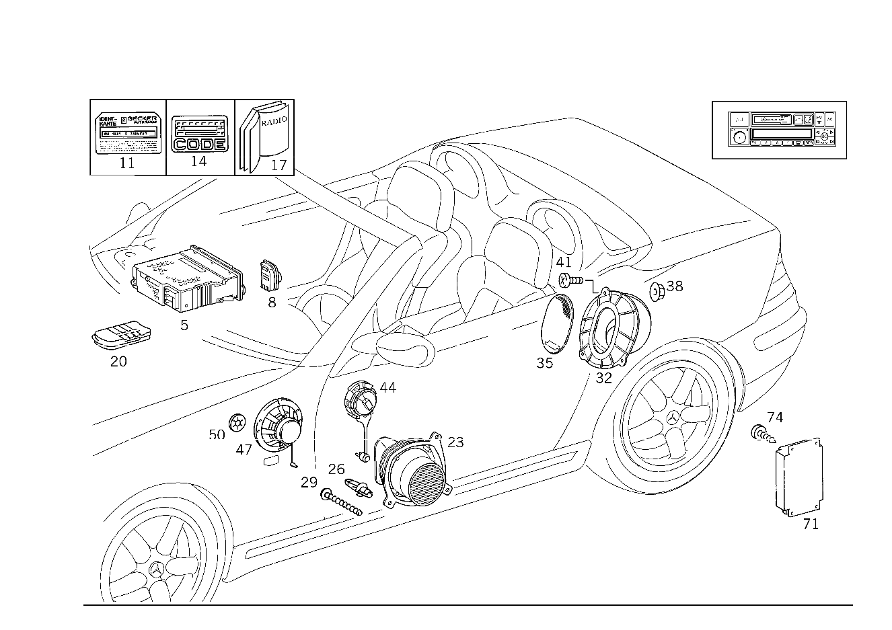

| № | Артикул | Название | Кол. | Примечание | Ограничение |
|---|---|---|---|---|---|
| 5 | A 003 820 62 86 | Радиоприемник | - | 515 | |
| 5 | A 210 820 09 86 | Радиоприемник | 1 | MB CLASSIC VK UND RDS [697] ДЕТАЛЬ ПОСТАВЛЯЕТСЯ ТОЛЬКО/ИЛИ ТАКЖЕ КАК ЗАП.ЧАСТЬ | 515 |
| 5 | A 003 820 63 86 | Радиоприемник | 1 | MB CLASSIC [697] ДЕТАЛЬ ПОСТАВЛЯЕТСЯ ТОЛЬКО/ИЛИ ТАКЖЕ КАК ЗАП.ЧАСТЬ | 516 |
| 5 | A 003 820 82 86 | Радиоприемник | - | [697] ДЕТАЛЬ ПОСТАВЛЯЕТСЯ ТОЛЬКО/ИЛИ ТАКЖЕ КАК ЗАП.ЧАСТЬ | 512 |
| 5 | A 208 820 03 86 | АУДИОМОДУЛЬ К-Т | 1 | MB SPECIAL VK UND RDS [697] ДЕТАЛЬ ПОСТАВЛЯЕТСЯ ТОЛЬКО/ИЛИ ТАКЖЕ КАК ЗАП.ЧАСТЬ | 512 |
| 5 | A 003 820 56 86 | АУДИОМОДУЛЬ К-Т | 1 | MB EXQUISIT VK UND RDS [697] ДЕТАЛЬ ПОСТАВЛЯЕТСЯ ТОЛЬКО/ИЛИ ТАКЖЕ КАК ЗАП.ЧАСТЬ | 510 |
| 5 | A 003 820 58 86 | АУДИОМОДУЛЬ К-Т | 1 | MB EXQUISIT [697] ДЕТАЛЬ ПОСТАВЛЯЕТСЯ ТОЛЬКО/ИЛИ ТАКЖЕ КАК ЗАП.ЧАСТЬ [402] БОЛЬШЕ НЕ ПОСТАВЛЯЕТСЯ | 518 |
| 5 | A 003 820 57 86 | Радиоприемник | 1 | MB EXQUISIT VK UND RDS [697] ДЕТАЛЬ ПОСТАВЛЯЕТСЯ ТОЛЬКО/ИЛИ ТАКЖЕ КАК ЗАП.ЧАСТЬ | 511 |
| 5 | A 170 820 00 86 | Радиоприемник | 1 | MB SPECIAL CD [697] ДЕТАЛЬ ПОСТАВЛЯЕТСЯ ТОЛЬКО/ИЛИ ТАКЖЕ КАК ЗАП.ЧАСТЬ | 755 |
| 5 | A 208 820 03 86 | АУДИОМОДУЛЬ К-Т | - | [697] ДЕТАЛЬ ПОСТАВЛЯЕТСЯ ТОЛЬКО/ИЛИ ТАКЖЕ КАК ЗАП.ЧАСТЬ | 753 |
| 5 | A 210 820 09 86 | Радиоприемник | 1 | MB AUDIO 10 CC, MIT RDS [697] ДЕТАЛЬ ПОСТАВЛЯЕТСЯ ТОЛЬКО/ИЛИ ТАКЖЕ КАК ЗАП.ЧАСТЬ | 753 |
| 5 | A 170 820 01 86 | Радиоприемник | 1 | MB AUDIO 10 CD, MIT RDS [697] ДЕТАЛЬ ПОСТАВЛЯЕТСЯ ТОЛЬКО/ИЛИ ТАКЖЕ КАК ЗАП.ЧАСТЬ [891] ДО МОД. ГОДА 06/99 ЗА ИСКЛЮЧЕНИЕМ А/М С КОДОМ 800 | 756 |
| 5 | A 170 820 03 86 | Радиоприемник (RADIO) | 1 | AUDIO 10 SINGLE \- CD [697] ДЕТАЛЬ ПОСТАВЛЯЕТСЯ ТОЛЬКО/ИЛИ ТАКЖЕ КАК ЗАП.ЧАСТЬ | 756 |
| 5 | A 208 820 00 86 | АУДИОМОДУЛЬ К-Т | - | [697] ДЕТАЛЬ ПОСТАВЛЯЕТСЯ ТОЛЬКО/ИЛИ ТАКЖЕ КАК ЗАП.ЧАСТЬ | 750 |
| 5 | A 210 820 14 86 | Радиоприемник (RADIO) | 1 | MB AUDIO 30 CC, MIT RDS [697] ДЕТАЛЬ ПОСТАВЛЯЕТСЯ ТОЛЬКО/ИЛИ ТАКЖЕ КАК ЗАП.ЧАСТЬ | 750 |
| 5 | A 208 820 04 86 | Радиоприемник | - | 754 | |
| 5 | A 210 820 10 86 | Радиоприемник (RADIO) | 1 | MB AUDIO 10 CC [697] ДЕТАЛЬ ПОСТАВЛЯЕТСЯ ТОЛЬКО/ИЛИ ТАКЖЕ КАК ЗАП.ЧАСТЬ | 754 |
| 5 | A 208 820 06 86 | Радиоприемник | - | 752 | |
| 5 | A 210 820 15 86 | Радиоприемник (RADIO) | 1 | MB AUDIO 30 CC | 752 |
| 8 | A 208 820 24 89 | - ОРГАН УПРАВЛ. | 1 | TO 208 820 03 86 | 753 |
| 8 | A 208 820 26 89 | - Элемент управления (BEDIENTEIL) | 1 | TO 208 820 00 86 | 750 |
| 8 | A 208 820 25 89 | - Устройство управления | 1 | TO 208 820 04 86 | 754 |
| 8 | A 208 820 26 89 | - Элемент управления (BEDIENTEIL) | 1 | TO 208 820 06 86 | 752 |
| 8 | A 170 820 05 89 | - ОРГАН УПРАВЛ. | 1 | TO 170 820 01 86 [417] БОЛЬШЕ НЕ ПОСТАВЛЯЕТСЯ, ЗАКАЗЫВАТЬ КОМПЛЕКТ ПОСТАВКИ | 756 |
| 11 | A 000 820 46 00 | - Карта устройства | 1 | ||
| 14 | A 202 817 14 20 | - Информационная табличка (HINWEISSCHILD) | 2 | [402] БОЛЬШЕ НЕ ПОСТАВЛЯЕТСЯ | |
| 14 | A 210 817 21 20 | - Информационная табличка (HINWEISSCHILD) | 1 | (750/752/753/754/756) | |
| 17 | A 210 584 05 82 | Руководство (BEDIENUNGSANLEITUNG) | 1 | НА НЕМЕЦКОМ ЯЗЫКЕ | 510/511/512/518/755 |
| 17 | A 210 584 04 82 | Руководство (BEDIENUNGSANLEITUNG) | 1 | НА АНГЛИЙСКОМ ЯЗЫКЕ [402] БОЛЬШЕ НЕ ПОСТАВЛЯЕТСЯ | 510/511/512/518/755 |
| 17 | A 210 584 03 82 | Руководство (BEDIENUNGSANLEITUNG) | 1 | НА ФРАНЦУЗСКОМ ЯЗЫКЕ [402] БОЛЬШЕ НЕ ПОСТАВЛЯЕТСЯ | 510/511/512/518/755 |
| 17 | A 210 584 02 82 | Руководство | 1 | ПО\-ИСПАНСКИ [402] БОЛЬШЕ НЕ ПОСТАВЛЯЕТСЯ | 510/511/512/518/755 |
| 17 | A 210 584 01 82 | Руководство (BEDIENUNGSANLEITUNG) | 1 | ПО\-ИТАЛЬЯНСКИ [402] БОЛЬШЕ НЕ ПОСТАВЛЯЕТСЯ | 510/511/512/518/755 |
| 17 | A 210 584 00 82 | РУК-ВО ПО ЭКСПЛУАТ. | 1 | ПО\-ПОРТУГАЛЬСКИ [402] БОЛЬШЕ НЕ ПОСТАВЛЯЕТСЯ | 510/511/512/518/755 |
| 17 | A 202 820 77 00 | Руководство (BEDIENUNGSANLEITUNG) | 1 | ПО\-НЕМЕЦ./ПО\-АНГЛ./ПО\-ФРАНЦ. CLASSIC | 515/516 |
| 17 | A 202 820 78 00 | Руководство (BEDIENUNGSANLEITUNG) | 1 | ПО\-ИТАЛ./ИСПАН./ПОРТУГ./ГОЛЛАНДС. CLASSIC | 515/516 |
| 17 | A 202 820 56 00 | РУКОВОДСТВО ПО ЭКСПЛУАТ. | 1 | ПО\-НЕМЕЦ./ПО\-АНГЛ./ПО\-ФРАНЦ. SPECIAL | 512 |
| 17 | A 202 820 57 00 | Руководство (BEDIENUNGSANLEITUNG) | 1 | ПО\-ИТАЛ./ИСПАН./ПОРТУГ./ГОЛЛАНДС. SPECIAL | 512 |
| 17 | A 202 820 58 00 | РУКОВОДСТВО ПО ЭКСПЛУАТ. | 1 | ПО\-НЕМЕЦ./ПО\-АНГЛ./ПО\-ФРАНЦ. EXQUISIT | 510/511/518 |
| 17 | A 202 820 59 00 | РУКОВОДСТВО ПО ЭКСПЛУАТ. | - | 510/511/518 | |
| 17 | A 202 820 58 00 | РУКОВОДСТВО ПО ЭКСПЛУАТ. | 1 | ПО\-ИТАЛ./ИСПАН./ПОРТУГ./ГОЛЛАНДС. EXQUISIT | 510/511/518 |
| 17 | A 202 820 79 00 | Руководство (BEDIENUNGSANLEITUNG) | 1 | ПО\-АНГЛ./ПО\-ФРАНЦ./ПО\-АРАБ. CLASSIC | 515/516 |
| 17 | A 202 820 61 00 | Руководство (BEDIENUNGSANLEITUNG) | 1 | ПО\-АНГЛ./ПО\-ФРАНЦ./ПО\-АРАБ. EXQUISIT | 510/511/518 |
| 17 | A 140 584 24 81 | РУКОВОДСТВО ПО ЭКСПЛУАТ. | 1 | НА НЕМЕЦКОМ ЯЗЫКЕ MB SPECIAL CD | 755 |
| 17 | A 202 584 84 81 | Руководство (BEDIENUNGSANLEITUNG) | 1 | НА НЕМЕЦКОМ ЯЗЫКЕ [891] ДО МОД. ГОДА 06/99 ЗА ИСКЛЮЧЕНИЕМ А/М С КОДОМ 800 | 750/752/753/754/756 |
| 17 | A 202 584 84 81 | Руководство (BEDIENUNGSANLEITUNG) | 1 | НА НЕМЕЦКОМ ЯЗЫКЕ | 750/752/753/754/756 |
| 17 | A 202 584 85 81 | Руководство (BEDIENUNGSANLEITUNG) | 1 | НА АНГЛИЙСКОМ ЯЗЫКЕ [402] БОЛЬШЕ НЕ ПОСТАВЛЯЕТСЯ [891] ДО МОД. ГОДА 06/99 ЗА ИСКЛЮЧЕНИЕМ А/М С КОДОМ 800 | 750/752/753/754/756 |
| 17 | A 168 584 74 83 | РУК-ВО ПО ЭКСПЛУАТ. | 1 | НА АНГЛИЙСКОМ ЯЗЫКЕ | 750/752/753/754/756 |
| 17 | A 202 584 86 81 | Руководство (BEDIENUNGSANLEITUNG) | 1 | НА ФРАНЦУЗСКОМ ЯЗЫКЕ [402] БОЛЬШЕ НЕ ПОСТАВЛЯЕТСЯ [891] ДО МОД. ГОДА 06/99 ЗА ИСКЛЮЧЕНИЕМ А/М С КОДОМ 800 | 750/752/753/754/756 |
| 17 | A 168 584 75 83 | Руководство (BEDIENUNGSANLEITUNG) | 1 | НА ФРАНЦУЗСКОМ ЯЗЫКЕ [402] БОЛЬШЕ НЕ ПОСТАВЛЯЕТСЯ | 750/752/753/754/756 |
| 17 | A 202 584 87 81 | Руководство (BEDIENUNGSANLEITUNG) | 1 | ПО\-ПОРТУГАЛЬСКИ [402] БОЛЬШЕ НЕ ПОСТАВЛЯЕТСЯ [891] ДО МОД. ГОДА 06/99 ЗА ИСКЛЮЧЕНИЕМ А/М С КОДОМ 800 | 750/752/753/754/756 |
| 17 | A 168 584 77 83 | Руководство (BEDIENUNGSANLEITUNG) | 1 | ПО\-ПОРТУГАЛЬСКИ [402] БОЛЬШЕ НЕ ПОСТАВЛЯЕТСЯ | 750/752/753/754/756 |
| 17 | A 202 584 88 81 | Руководство (BEDIENUNGSANLEITUNG) | 1 | ПО\-ИТАЛЬЯНСКИ [402] БОЛЬШЕ НЕ ПОСТАВЛЯЕТСЯ [891] ДО МОД. ГОДА 06/99 ЗА ИСКЛЮЧЕНИЕМ А/М С КОДОМ 800 | 750/752/753/754/756 |
| 17 | A 168 584 78 83 | Руководство | 1 | ПО\-ИТАЛЬЯНСКИ | 750/752/753/754/756 |
| 17 | A 202 584 89 81 | Руководство | 1 | ПО\-РУССКИ [402] БОЛЬШЕ НЕ ПОСТАВЛЯЕТСЯ [891] ДО МОД. ГОДА 06/99 ЗА ИСКЛЮЧЕНИЕМ А/М С КОДОМ 800 | 750/752/753/754/756 |
| 17 | A 168 584 95 83 | Руководство | 1 | ПО\-РУССКИ | 750/752/753/754/756 |
| 17 | A 202 584 90 81 | Руководство (BEDIENUNGSANLEITUNG) | 1 | ПО\-ШВЕЦКИ [402] БОЛЬШЕ НЕ ПОСТАВЛЯЕТСЯ [891] ДО МОД. ГОДА 06/99 ЗА ИСКЛЮЧЕНИЕМ А/М С КОДОМ 800 | 750/752/753/754/756 |
| 17 | A 168 584 81 83 | Руководство (BEDIENUNGSANLEITUNG) | 1 | ПО\-ШВЕЦКИ [402] БОЛЬШЕ НЕ ПОСТАВЛЯЕТСЯ | 750/752/753/754/756 |
| 17 | A 202 584 91 81 | Руководство (BEDIENUNGSANLEITUNG) | 1 | ПО\-ДАТСКИ [402] БОЛЬШЕ НЕ ПОСТАВЛЯЕТСЯ [891] ДО МОД. ГОДА 06/99 ЗА ИСКЛЮЧЕНИЕМ А/М С КОДОМ 800 | 750/752/753/754/756 |
| 17 | A 168 584 80 83 | Руководство (BEDIENUNGSANLEITUNG) | 1 | ПО\-ДАТСКИ [402] БОЛЬШЕ НЕ ПОСТАВЛЯЕТСЯ | 750/752/753/754/756 |
| 17 | A 202 584 92 81 | Руководство (BEDIENUNGSANLEITUNG) | 1 | ПО\-ГОЛЛАНДСКИ [402] БОЛЬШЕ НЕ ПОСТАВЛЯЕТСЯ [891] ДО МОД. ГОДА 06/99 ЗА ИСКЛЮЧЕНИЕМ А/М С КОДОМ 800 | 750/752/753/754/756 |
| 17 | A 168 584 79 83 | Руководство (BEDIENUNGSANLEITUNG) | 1 | ПО\-ГОЛЛАНДСКИ [402] БОЛЬШЕ НЕ ПОСТАВЛЯЕТСЯ | 750/752/753/754/756 |
| 17 | A 202 584 93 81 | Руководство (BEDIENUNGSANLEITUNG) | 1 | ПО\-ИСПАНСКИ [402] БОЛЬШЕ НЕ ПОСТАВЛЯЕТСЯ [891] ДО МОД. ГОДА 06/99 ЗА ИСКЛЮЧЕНИЕМ А/М С КОДОМ 800 | 750/752/753/754/756 |
| 17 | A 168 584 76 83 | Руководство (BEDIENUNGSANLEITUNG) | 1 | ПО\-ИСПАНСКИ [402] БОЛЬШЕ НЕ ПОСТАВЛЯЕТСЯ | 750/752/753/754/756 |
| 17 | A 202 584 94 81 | Руководство | 1 | ПО\-ФИНСКИ [402] БОЛЬШЕ НЕ ПОСТАВЛЯЕТСЯ [891] ДО МОД. ГОДА 06/99 ЗА ИСКЛЮЧЕНИЕМ А/М С КОДОМ 800 | 750/752/753/754/756 |
| 17 | A 168 584 82 83 | Руководство (BEDIENUNGSANLEITUNG) | 1 | ПО\-ФИНСКИ [402] БОЛЬШЕ НЕ ПОСТАВЛЯЕТСЯ | 750/752/753/754/756 |
| 17 | A 202 584 95 81 | Руководство | 1 | ПО\-АРАБСКИ [402] БОЛЬШЕ НЕ ПОСТАВЛЯЕТСЯ [891] ДО МОД. ГОДА 06/99 ЗА ИСКЛЮЧЕНИЕМ А/М С КОДОМ 800 | 750/752/753/754/756 |
| 17 | A 168 584 93 83 | РУК-ВО ПО ЭКСПЛУАТ. | 1 | ПО\-АРАБСКИ | 750/752/753/754/756 |
| 20 | A 000 820 75 26 | Пульт ДУ | 1 | [402] БОЛЬШЕ НЕ ПОСТАВЛЯЕТСЯ | 510 |
| 20 | A 000 820 82 26 | ДИСТ. УПРАВЛЕНИЕ | 1 | 511 | |
| 20 | A 002 820 82 89 | Пульт ДУ (FERNBEDIENUNG) | 1 | [402] БОЛЬШЕ НЕ ПОСТАВЛЯЕТСЯ | 750 |
| 23 | B66828387 | LOUDSPEAKER | 1 | ДИНАМИК ВОДИТ. ДВЕРИ СЛЕВА | -810 |
| 23 | B66828441 | ДИНАМИК | 1 | ДИНАМИК ДВЕРИ ВОДИТ. [402] БОЛЬШЕ НЕ ПОСТАВЛЯЕТСЯ | -810 |
| 23 | A 170 820 29 02 | Динамик (LAUTSPRECHER) | 1 | ВОДИТЕЛЬСКАЯ ДВЕРИ СЛЕВА | -810 |
| 23 | B66828383 | ДИНАМИК | 1 | ДИНАМИК ДВЕРИ ВОДИТ. СЛЕВА, ПРИ АУДИОСИСТЕМЕ | 810 |
| 23 | B66828443 | ДИНАМИК | 1 | ДИНАМИК ДВЕРИ ВОДИТ. СЛЕВА, ПРИ АУДИОСИСТЕМЕ | 810 |
| 23 | A 170 820 27 02 | Динамик (LAUTSPRECHER) | 1 | ДИНАМИК ДВЕРИ ВОДИТ. СЛЕВА, ПРИ АУДИОСИСТЕМЕ | 810 |
| 23 | B66828388 | LOUDSPEAKER | 1 | ДИНАМИК ВОДИТ. ДВЕРИ СПРАВА | -810 |
| 23 | B66828442 | ДИНАМИК (LAUTSPRECHER) | 1 | ДИНАМИК ВОДИТ. ДВЕРИ СПРАВА [402] БОЛЬШЕ НЕ ПОСТАВЛЯЕТСЯ | -810 |
| 23 | A 170 820 30 02 | Динамик (LAUTSPRECHER) | 1 | ДВЕРЬ ВОДИТЕЛЯ СПРАВА | -810 |
| 23 | B66828384 | LOUDSPEAKER | - | 810 | |
| 23 | A 170 820 04 02 | Динамик (LAUTSPRECHER) | 1 | ДИНАМИК ДВЕРИ ВОДИТ. СПРАВА, ПРИ АУДИОСИСТЕМЕ [402] БОЛЬШЕ НЕ ПОСТАВЛЯЕТСЯ | 810 |
| 23 | B66828444 | ДИНАМИК | 1 | ДИНАМИК ДВЕРИ ВОДИТ. СПРАВА, ПРИ АУДИОСИСТЕМЕ | 810 |
| 26 | A 000 988 66 25 | Дюбель (DUEBEL) | 6 | ДИНАМИК НА ДВЕРИ ВОДИТ. | |
| 29 | A 001 990 28 36 | БОЛТ | - | ||
| 29 | A 002 984 42 29 | болт (SCHRAUBE) | 6 | ДИНАМИК НА ДВЕРИ ВОДИТ.; 5.1 X 25 MM | |
| 32 | B66828385 | LOUDSPEAKER | 1 | ДИНАМИК ЗАДНЕЙ СТЕНКИ СЛЕВА | 810 |
| 32 | B66828445 | ДИНАМИК | 1 | ДИНАМИК ЗАДНЕЙ СТЕНКИ СЛЕВА | 810 |
| 32 | A 170 820 35 02 | ДИНАМИК | 1 | ДИНАМИК ЗАДНЕЙ СТЕНКИ СЛЕВА [402] БОЛЬШЕ НЕ ПОСТАВЛЯЕТСЯ | 810 |
| 32 | B66828386 | LOUDSPEAKER | 1 | ДИНАМИК ЗАДНЕЙ СТЕНКИ СПРАВА | 810 |
| 32 | B66828446 | ДИНАМИК | 1 | ДИНАМИК ЗАДНЕЙ СТЕНКИ СПРАВА | 810 |
| 32 | A 170 820 36 02 | ДИНАМИК | 1 | ДИНАМИК ЗАДНЕЙ СТЕНКИ СПРАВА [402] БОЛЬШЕ НЕ ПОСТАВЛЯЕТСЯ | 810 |
| 35 | A 170 827 01 40 | Крышка (ABDECKUNG) | 2 | ДИНАМИК | |
| 38 | N 913023 006001 | Гайка (MUTTER) | 6 | ДИНАМИК; M6 | |
| 41 | A 001 990 33 22 | болт (SCHRAUBE) | 6 | ДИНАМИК | |
| 44 | B66828382 | LOUDSPEAKER | 2 | ВЧ\-ДИНАМИК, В ДВЕРИ ВОДИТ. [402] БОЛЬШЕ НЕ ПОСТАВЛЯЕТСЯ | |
| 44 | B66828440 | ДИНАМИК (LAUTSPRECHER) | 2 | ВЧ\-ДИНАМИК, В ДВЕРИ ВОДИТ. [402] БОЛЬШЕ НЕ ПОСТАВЛЯЕТСЯ | |
| 47 | A 202 820 67 02 | Динамик (LAUTSPRECHER) | 1 | АВТОТЕЛЕФОН | |
| 47 | A 168 820 09 02 | Динамик (LAUTSPRECHER) | 1 | АВТОТЕЛЕФОН | |
| 50 | A 000 994 91 45 | предохранитель (SICHERUNG) | 3 | ДИНАМИК | |
| 71 | B66828465 | УСИЛИТЕЛЬ | 1 | УСИЛИТЕЛЬ, АУДИОСИСТЕМА | 810 |
| 71 | A 170 820 04 89 | УСИЛИТЕЛЬ | - | 810 | |
| 71 | A 170 820 06 89 | Аксессуары аудиосистемы (RADIO-ZUBEHOER) | 1 | АУДИО\-СИСТЕМА | 810 |
| 74 | N 007981 004325 | Шуруп (BLECHSCHRAUBE) | 4 | УСИЛИТЕЛЬ | 810 |
Позиций: 103 · подписано на схемах: 103 · колесо — плавный зум в курсор, перетаскивание — пан, двойной клик — зум, клик по артикулу — скопировать.